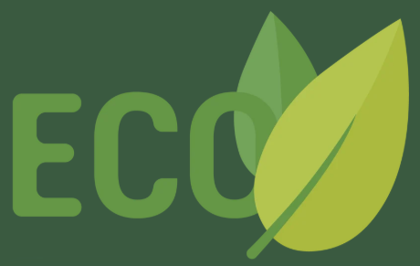
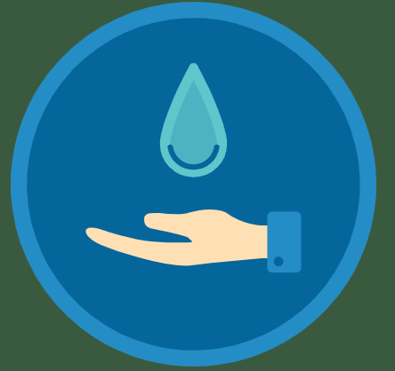
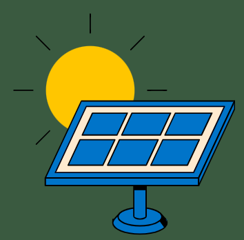
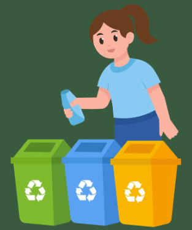

.jpg)
ecoagro future

Desenvolvemos soluções sustentáveis para o agronegócio, unindo tecnologia, produtividade e preservação ambiental 🍃
🚜 Inovação para o Campo
Soluções inteligentes que ajudam produtores rurais a aumentar a produtividade sem prejudicar a natureza
💧ECONOMIA DE ÀGUA
Sistemas inteligentes para reduzir desperdícios
☀️ENERGIA LIMPA
Uso de energia solar no campo
♻️RECICLAGEM
Reaproveitamento de resíduos agrícolas
💧ECONOMIA DE ÁGUA
Uso inteligente da água
A água é um recurso essencial para a agricultura. Por isso, a EcoAgro Future utiliza sistemas modernos de irrigação que reduzem desperdícios e aumentam a eficiência da produção.
Benefícios
✅ Menor desperdício de água
✅ Maior produtividade
✅ Preservação dos recursos hídricos

☀️ENERGIA LIMPA
✅ Agricultura mais sustentável
ENERGIA PARA O FUTURO SUSTENTÁnVEL
A utilização de energia solar reduz os impactos ambientais e ajuda os produtores rurais a economizar recursos
Benefícios
✅ Redução da poluição
✅ Menor consumo de combustíveis fósseis
✅ Economia de energia
✅ Fonte renovável e sustentável

♻️RECICLAGEM
Reaproveitar para preservar
A reciclagem contribui para a redução de resíduos no campo e promove o uso consciente dos recursos naturais.
Benefícios
✅ Menos resíduos agrícolas
✅ Reutilização de materiais
✅ Redução da poluição ambiental
✅ Desenvolvimento sustentável

🌱 AGRICULTURA SUSTENTÁVEL
Produzir com responsabilidade
A agricultura sustentável busca equilibrar o crescimento da produção agrícola com a preservação do meio ambiente
Nossos objetivos
🌿 Preservar a natureza
🌿 Proteger o solo e a água
🌿 Incentivar tecnologias sustentáveis
🌿 Garantir qualidade de vida para as futuras gerações
🚜 Nossas Tecnologias
🚁 Drones Agrícolas
📱 Gestão Digital
Monitoramento das louvadoras
Controle inteligente da produção
💧 Irrigação Inteligente
☀️ Energia Solar
Economia de água e maior eficiência
Fonte limpa e renovável
🌱 Sensores Ambientais
Monitoramento do solo e clima